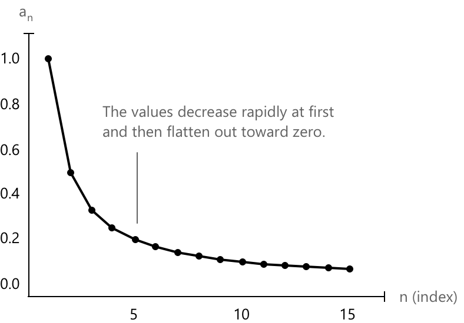
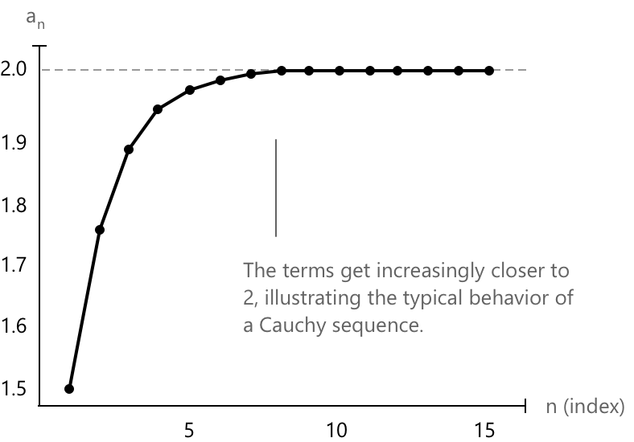

Послідовність Коші
Що таке послідовність Коші
Послідовність Коші — це особливий тип послідовності, в якій, чим далі ми просуваємося, тим ближчими стають її члени один до одного. Неважливо, якою є границя або чи відома вона вам: важливою є те, що різниця між членами стає все меншою і меншою. Ця ідея є важливою, оскільки вона допомагає нам зрозуміти, чи поводиться послідовність стабільно, ще до того, як ми точно дізнаємося, до чого вона наближається. Формально:
Нехай \( {a_n} \) — послідовність. Тоді \( {a_n} \) є послідовністю Коші тоді і тільки тоді, коли вона є збіжною. Іншими словами, виконується наступна умова:
\[ \forall \varepsilon > 0 \quad \exists \nu \in \mathbb{N} : \quad |a_n - a_m| < \varepsilon \quad \forall n, m > \nu \]
Цей критерій також застосовується до рядів і дозволяє нам довести збіжність, не знаючи точного значення суми. Замість обчислення границі ми перевіряємо, чи стають члени послідовності частинних сум довільно близькими один до одного.
Послідовність вигляду \( a_n = \frac{1}{n} \) є послідовністю Коші, де значення стають дедалі ближчими одне до одного зі зростанням ( n ). При побудові на графіку це відображає:
- криву, що починається з \( a_1 = 1 \) і швидко спадає,
- точки, які стають дедалі щільнішими біля нуля,
- відстань між будь-якими двома членами \( a_n \) та \( a_m \) для великих \( n \) та \( m \) стає все меншою і меншою.

Зі зростанням \( n \) члени стають все меншими і меншими, наближаючись до нуля. Це класичний приклад послідовності, що збігається до 0.
Інший приклад послідовності Коші задається послідовністю, визначеною як:
\[ a_n = 1 + \frac{1}{2} + \frac{1}{4} + \dots + \frac{1}{2^n} \]
Це сума перших \( n \) членів геометричної прогресії з розносом \( \frac{1}{2} \). Ця послідовність є послідовністю Коші, тому що:
- Члени стають дедалі ближчими один до одного.
- Кожен новий член додає все менше і менше до загальної суми.
- Відстань між \( a_n \) та \( a_m \) (для \( m > n \)) стає надзвичайно малою, оскільки ви додаєте лише такі значення, як:
\( \begin{align}\\[0.5em]\dfrac{1}{2^{n+1}}, \dfrac{1}{2^{n+2}}, \dots \end{align}\)

У границі ця послідовність збігається до \( 2 \), що підтверджує, що вона є як послідовністю Коші, так і збіжною послідовністю.
Загалом, чисельна послідовність називається геометричною прогресією, коли відношення між кожним членом і попереднім є сталим
Теорема
Кожна збіжна послідовність \( (x_n)_n \) є послідовністю Коші.
Критерій Коші дозволяє нам виявити збіжність, ґрунтуючись лише на тому, наскільки близько члени наближаються один до одного, без необхідності знати фактичну границю. У повних просторах, таких як дійсні числа, цієї внутрішньої узгодженості достатньо, щоб гарантувати збіжність послідовності.
Власне, нехай \( (x_n) \) — збіжна послідовність у \( \mathbb{R} \), і нехай \( L \in \mathbb{R} \) — її границя. За означенням збіжності маємо:
\[ \forall \varepsilon > 0, \ \exists N \in \mathbb{N} \ \text{такий, що} \ |x_n – L| < \frac{\varepsilon}{2} \quad \forall \, n \geq N \]
Тепер для будь-яких \( n, m \geq N \) застосуємо нерівність трикутника:
\[ |x_n - x_m| = |x_n - L + L - x_m| \leq |x_n – L| + |x_m – L| < \frac{\varepsilon}{2} + \frac{\varepsilon}{2} = \varepsilon \]
Таким чином, маємо:
\[ \forall \varepsilon > 0, \ \exists N \in \mathbb{N} \ \text{такий, що} \ |x_n – x_m| < \varepsilon \quad \forall \, n, m \geq N \]
Це саме означення послідовності Коші. Отже, кожна збіжна послідовність є послідовністю Коші.
Теорема
Кожна послідовність Коші \( (x_n) \) також є обмеженою послідовністю. Власне, за означенням, якщо \( (x_n) \) є послідовністю Коші, то:
\[ \forall \varepsilon > 0, \ \exists N \in \mathbb{N} \ \text{такий, що} \ |x_n – x_m| < \varepsilon \quad \forall n, m \geq N \]
Нехай оберемо \( \varepsilon = 1 \). Тоді існує \( N \in \mathbb{N} \), такий, що:
\[ |x_n - x_m| < 1 \quad \forall n, m \geq N \]
Фіксуємо \( m = N \), тоді отримаємо:
\[ |x_n – x_N| < 1 \Rightarrow |x_n| \leq |x_N| + 1 \quad \forall n \geq N \]
Тепер визначимо:
\[ M_1 := \max{|x_0|, |x_1|, \dots, |x_{N-1}|}, \quad M_2 := |x_N| + 1 \]
Нехай:
\[ M := \max{M_1, M_2} \Rightarrow |x_n| \leq M \quad \forall n \in \mathbb{N} \]
Отже, послідовність \( (x_n) \) повністю міститься в скінченному проміжку і, таким чином, є обмеженою.